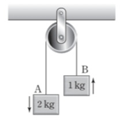
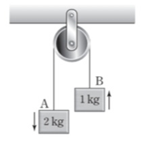

문제:
10. 그림과 같이 물체 A, B가 실로 연결되어 등가속도 직선 운동을 한다. A, B의 질량은 각각 2kg, 1kg이다. (단, 중력 가속도는 10m/s²이고, 실의 질량과 모든 마찰은 무시한다.)
10-1. A의 가속도의 크기를 구하시오.
10-2. 실이 B를 당기는 힘의 크기를 구하시오.
10. 그림과 같이 물체 A, B가 실로 연결되어 등가속도 직선 운동을 한다. A, B의 질량은 각각 2kg, 1kg이다. (단, 중력 가속도는 10m/s²이고, 실의 질량과 모든 마찰은 무시한다.)
10-1. A의 가속도의 크기를 구하시오.
10-2. 실이 B를 당기는 힘의 크기를 구하시오.